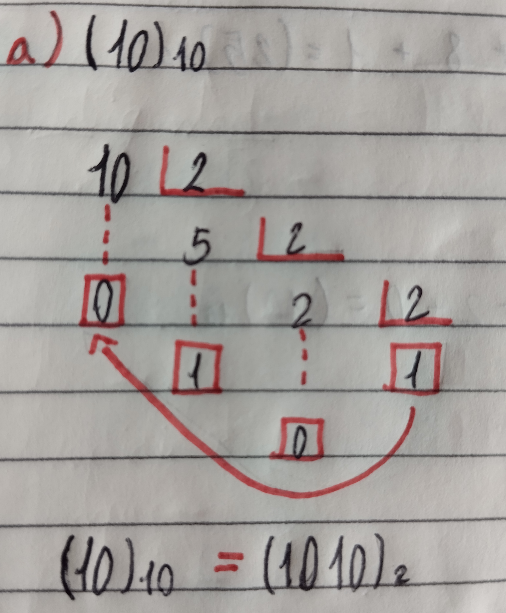
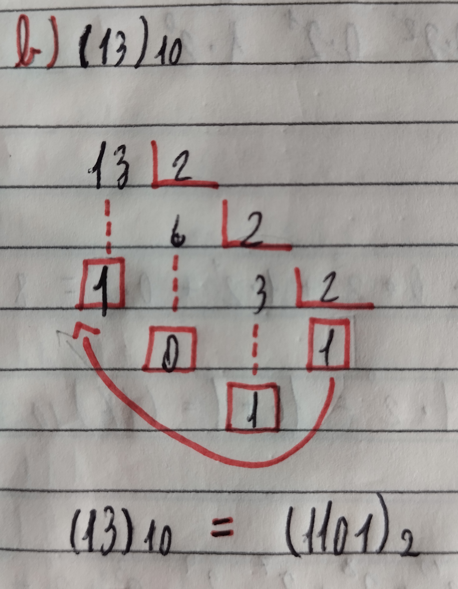
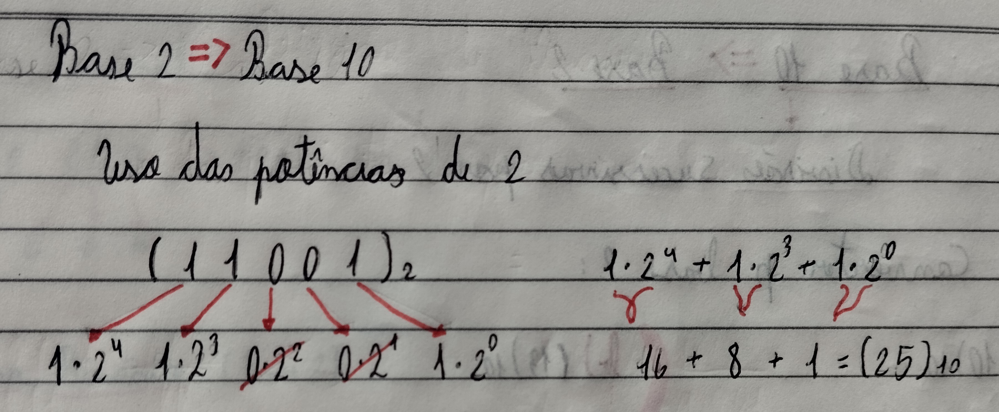
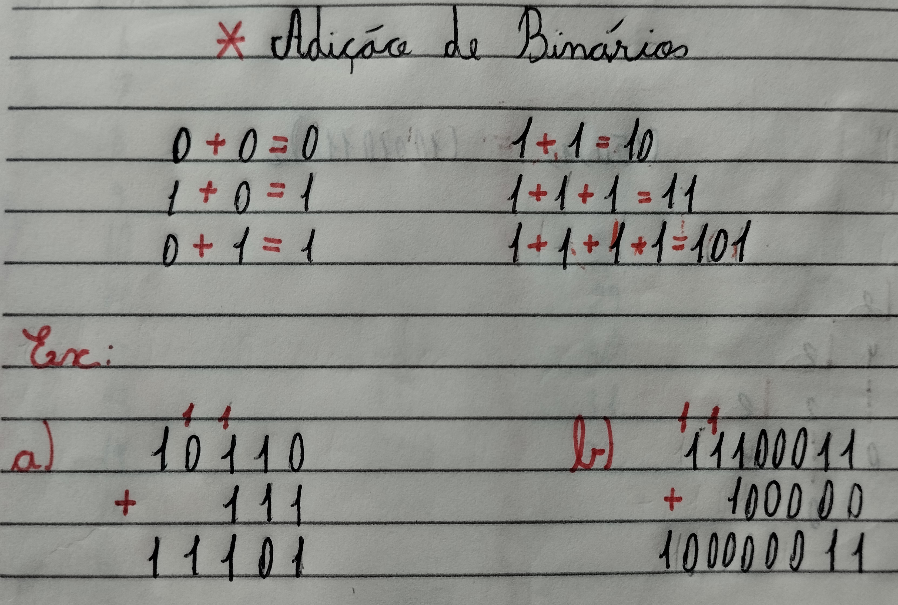
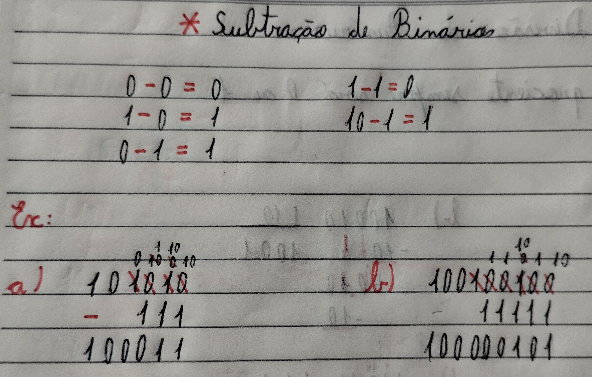
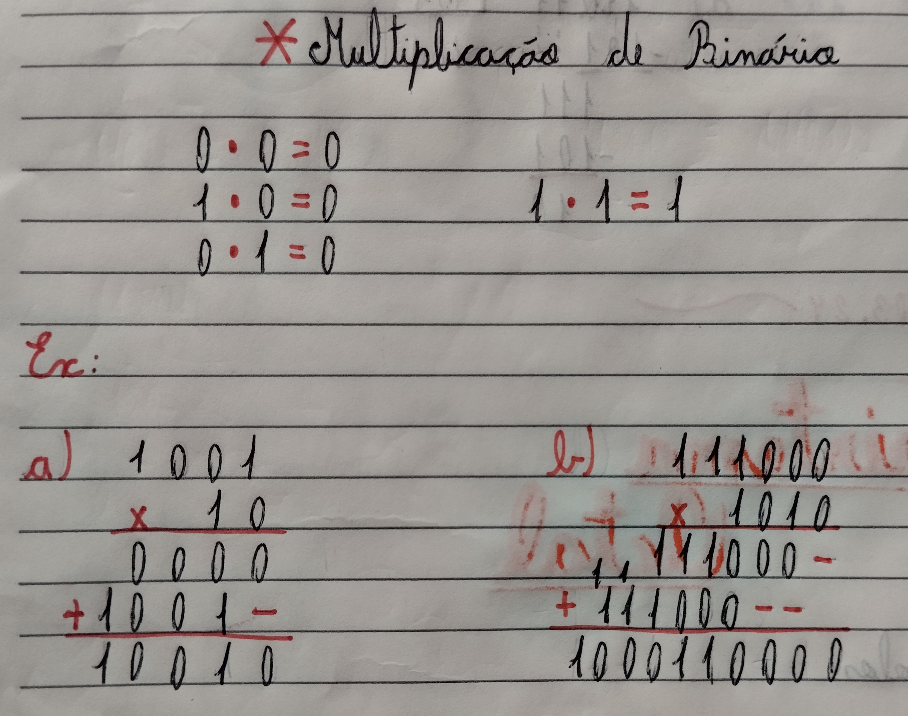
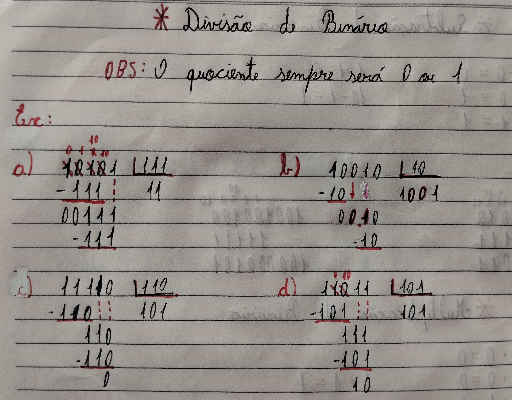

O sistema de numeração binária também é conhecido como base 2, ele tem esse nome pois utiliza 2 algarismos diferentes para representar os números. Os algarismos ou simbolos utilizados são ( 0 e 1 ).
O sistema binário é usado majoritariamente pelos computadores por sua facilidade, porque é mais fácil e rápido um algoritimo ler o número 1 e interpretar como verdadeiro do que ter que ficar verificando se 1,88475 seria considerado verdadeiro ou falso.
Sobre o surgimento desse sistema, acredita-se pela maioria que o matemático alemão Gottfried Leibniz o criou no século 18, porém alguns pesquisadores da Universidade de Bergen, na Noruega, descobriram que a utilização deste sistema de números é bem mais antigo, os polinésios da ilha de Mangareva já contavam com uma espécie de sistema binário há praticamente 600 anos
Base 10 -----> Base 2
Para converter da base 10 para a base 2 é utilizado o sistema de divisõens consecutivas, ou também conhecido como metodo da escadinha. Você terá que dividir o numero consecutivamente por 2 guardando o resto até o resultado ser 0 ou 1
|  | Nesse casa aqui o Dez na Base 10 é transformado em binário, (10)10 divídido por dois com o resultado 0 e por ai vai. |  | Depois que você termina a divisão o resultado sendo 0 ou 1, é necessário pegar o ultimo para o primeiro |
Base 2 -----> Base 10
Para trasnformar um número binário para decimal cada dígito deve ser multiplicado por potências de 2
|  | Como no exemplo aqui deve-se começar pelo último digito sendo multiplicado por 20, o penultimo por 21 e por ai vai.
Após isso, é necessário fazer uma cona de adição com os resultados das potências |
Os números binários também servem para fazer contas, eles utilizam as mesmas regras que são usadas no sistema decimal
|  |  |
|  |  |
| Sistema Decimal | Sistema Binário | Sistema Decimal | Sistema Binário | Sistema Decimal | Sistema Binário |
|---|---|---|---|---|---|
| 0 | 0 | 17 | 10001 | 34 | 100010 |
| 1 | 1 | 18 | 10010 | 35 | 100011 |
| 2 | 10 | 19 | 10011 | 36 | 100100 |
| 3 | 11 | 20 | 10100 | 37 | 100101 |
| 4 | 100 | 21 | 10101 | 38 | 100110 |
| 5 | 101 | 22 | 10110 | 39 | 100111 |
| 6 | 110 | 23 | 10111 | 40 | 101000 |
| 7 | 111 | 24 | 11000 | 41 | 101001 |
| 8 | 1000 | 25 | 11001 | 42 | 101010 |
| 9 | 1001 | 26 | 11010 | 43 | 101011 |
| 10 | 1010 | 27 | 11011 | 44 | 101100 |
| 11 | 1011 | 28 | 11100 | 45 | 101101 |
| 12 | 1100 | 29 | 11101 | 46 | 101110 |
| 13 | 1101 | 30 | 11110 | 47 | 101111 |
| 14 | 1110 | 31 | 11111 | 48 | 110000 |
| 15 | 1111 | 32 | 100000 | 49 | 110001 |
| 16 | 10000 | 33 | 100001 | 50 | 110010 |
fonte: documentos prof. Váleria